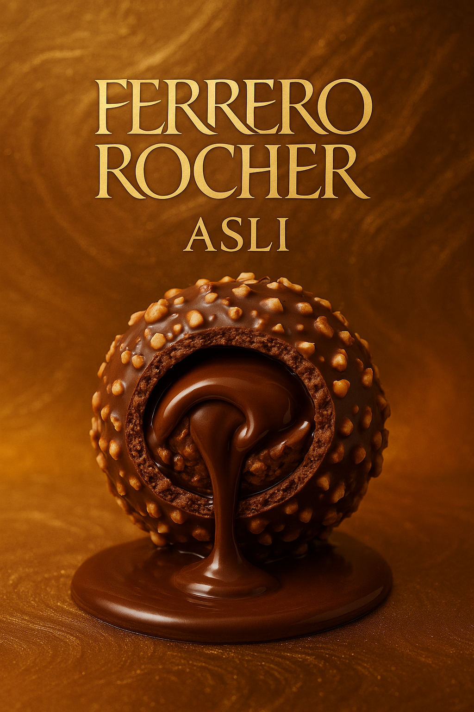

Lezzetin Uyum Dansı
Dış katmanında kıtır fındıklar, içinde ise akışkan çikolata... Bu bir tat şölenidir.
Yumuşak dokusu ve altın kaplamasıyla her lokma zarafetle buluşur.

En iyi fındıklar, en kaliteli çikolata ile buluşuyor
Ferrero Rocher ASLI, içerdiği özenle seçilmiş fındık parçacıkları ve yoğun çikolata dolgusu ile lezzet şöleni sunar.

Dış katmanında kıtır fındıklar, içinde ise akışkan çikolata... Bu bir tat şölenidir.
Yumuşak dokusu ve altın kaplamasıyla her lokma zarafetle buluşur.
Neden ASLI
TIKLA VE ÖĞREN..
Çünkü ASLI, gerçek tatlara ve özgün malzemelere sadıktır.
Çikolata sadece tatlı değil, bir deneyimdir.